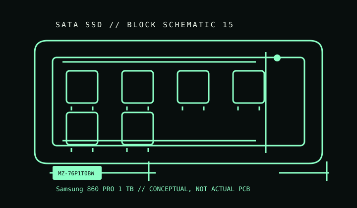

[ INDIVIDUAL COMPONENT // SATA SSD ]
Samsung 860 PRO 1 TB
Manufacturer-identified catalog entry for MZ-76P1T0BW. Capacity-specific ratings apply only to this SKU and revision; they should not be generalized to the product family.

IDENTIFICATION: Match full manufacturer part number MZ-76P1T0BW, label, capacity, and revision. Retail suffixes/regions and hardware or firmware revisions may vary; do not infer exact internals from the family name.
Specifications
| Manufacturer model / SKU | MZ-76P1T0BW |
|---|---|
| Catalog subcategory | Performance and endurance SATA SSDs |
| Capacity / generation | 2018 consumer 2.5-inch SATA SSD |
| Form factor / interface | 2.5-inch SATA SSD; see the precise dimensional/interface entry in the manufacturer source below. This listed model is not an M.2 NVMe drive. |
| Model-specific details | 1 TB; 2.5-inch, 7 mm; SATA 6 Gb/s; Samsung V-NAND 2-bit MLC; manufacturer-rated sequential transfer up to 560 MB/s read and 530 MB/s write; rated endurance 1,200 TBW for the 1 TB model. |
| Revision variants | Confirm full SKU suffix, assembly/date code, capacity, and firmware from the physical label and manufacturer documentation. Similar family names may conceal different capacities, NAND, or firmware; this entry does not assume interchangeable revisions. |
| TRIM / firmware / host | SATA host required; not NVMe. Use Samsung Magician only where the exact drive, firmware, operating system, and connection path are supported. TRIM support depends on the OS/driver passing the ATA command. |
Preservation & health notes
- Record label/model, serial, firmware, SMART attributes, host/controller, and a read-only health snapshot before changing firmware or configuration.
- Keep verified backups and periodically test stored copies. SSD health indicators and rated TBW are not guarantees of data retention or remaining life.
- Avoid powering or updating a drive with damaged connectors, liquid/corrosion exposure, or unexplained identity/revision differences until assessed; preserve the original labels and firmware state.
- Use the manufacturer's exact-model instructions for firmware, secure erase, encryption, and diagnostic utilities; availability may end when a product is discontinued.
Manufacturer sources
- Samsung — 860 PRO product and support pageManufacturer family product page; match full model code and revision before applying capacity-specific ratings.
Only manufacturer-linked, model-specific documentation is used here. Where a linked page covers a family, exact-SKU comparisons and archived revisions take precedence over the family description.